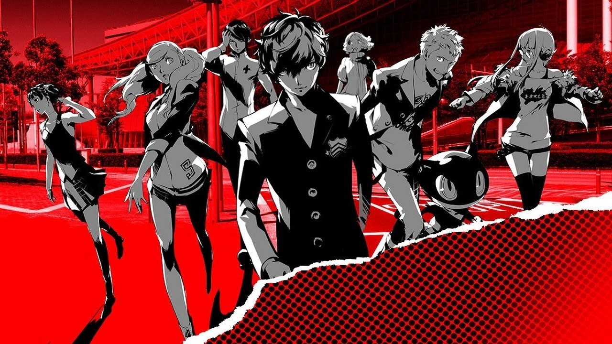
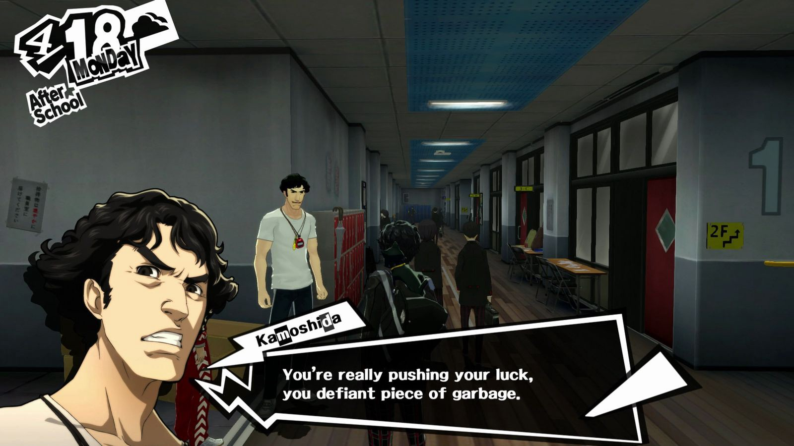
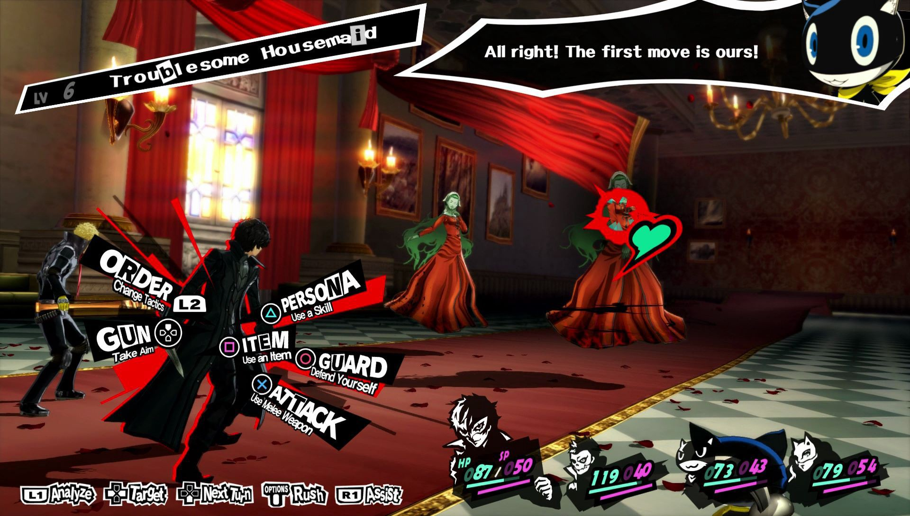
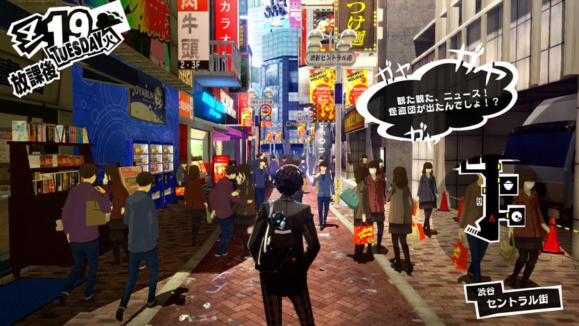
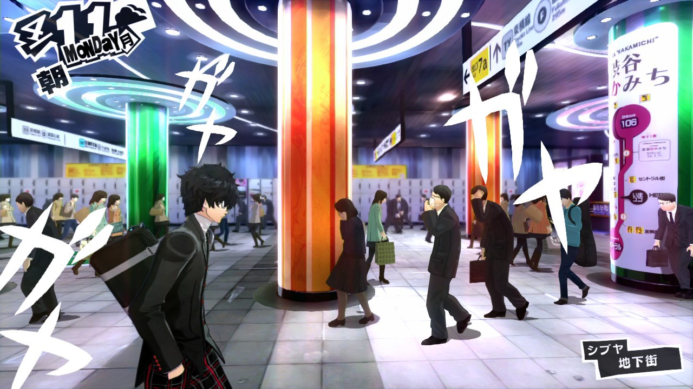

Persona 5: An Afterthought
 Disclaimer: This is not a critical review and by no means a comprehensive write-up. There are people who do a much better job of talking about games than me. Find them on YouTube or IGN. This is just me trying to collect my thoughts after playing Persona 5.
When the credit started scrolling, my eyes were almost filled with tears. The epic-ness embraced me. I haven’t played something this great for a really long time.
Persona 5 is an ambitious game. It’s rare to find a game that touches upon so many issues of modern society — political corruption, depression, abuse, sexual harassment, social media effects etc.
 However, that doesn’t make P5 overwhelming; on the contrary, all those issues are linked together nicely through an overall theme: personal freedom. P5 is all about freedom: the freedom to change, the freedom to break out of societal constraints and the freedom to accept who you are. All of the characters’ problems in P5 revolve around the same issue: they don’t have a choice. They are thrown into a “cell” and basically told this is the way things are. They are cogs in the machine. Their fates are in the hands of those in power. Then they discover how to rebel. They want to change the system, only to realize later “Be careful what you wish for”. Some people don’t have that luxury and slave their days away, being locked to a system. Then they are saved. But not everything is happy. Whether the answer they found is optimal in the end is up for you to decide.
Artistically, P5 oozes with styles. Everything — from dialogue boxes to battle options — was designed with utmost care and passion.
 Every option is beautiful
The transition from one scene to another is so smooth that I kept playing in one sitting. Environment design is also top notch. Atlus developer team successfully brought popular districts of Tokyo — Shinjuku, Akihabara, Shibuya — inside 20 GB of disk space. You can literally take a stroll here and observe the details
 Even the subway station is designed carefully.
 Look at the people in this picture
Palaces have some of the most beautiful level designs I’ve ever seen in my life. Each palace has a theme, and every detail is well incorporated into that theme.
P5 follows a traditional turn-based JRPG gameplay. However, it’s more than a turn-based game. In P5, your choice of skills, characters, personas may severely affect the outcome of the battle. The pace could be slow, but in (mini)-boss fights one misstep and the whole team could be wiped out. In addition to dungeon crawling and persona-farming, P5 does well to maintain its tradition of social simulation. You get to choose to hang out with your favorite characters and every side story is interesting enough to keep you hooked.
 Hangout with Ohya — a journalist
Hangout with Ohya — a journalist
As you hang out with a character, more content, story and battle skills unfold. Side characters’ stories are dark and disturbing. Life is not all rosy when you get to know someone deeply. But sometimes they are funny as hell with little comedic moments. I won’t talk about characters’ stories too much here to avoid spoilers.
By and large, Persona 5 is a game I’d definitely recommend anyone play if they have the luxury (time and a PS4). After 100 hours on the first playthrough and 20 hours in on New Game +, I’m still itching to play whenever I have time. I know this is a really long game and will likely take a lot of your time, but I’m sure you will learn something from P5 — whether the passion to craft a game this amazing, or the motivation to take actions, one at a time.